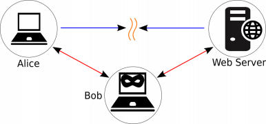
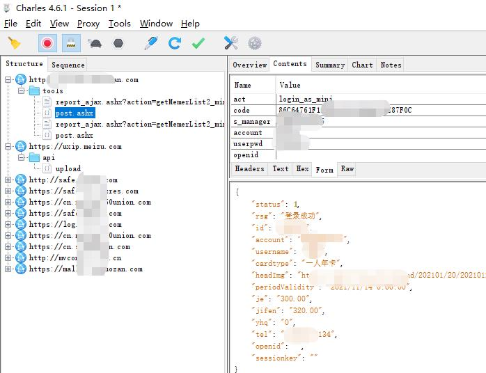
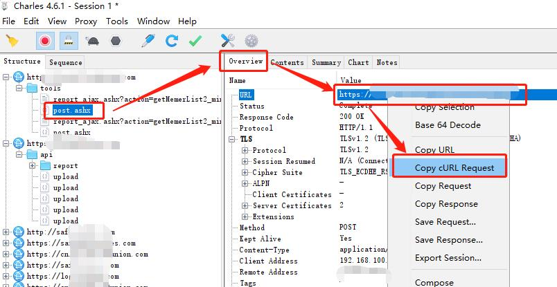
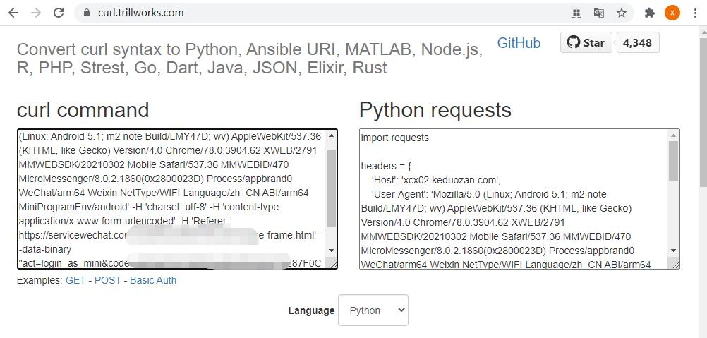

还记得上次写的如何给小孩约马术课的事情吗？见这里 Python 约课， 本想一劳永逸，但是好景不长，预约系统升级了，而且还换了服务商，从之前的公众号 H5 应用，换成了小程序，之前编写的方式直接失效，孩子又没马骑了
谁叫他遇到一个程序员老爸呢？这点事儿难不倒我，开干
小程序的不同之处
与访问 H5 不同的是，小程序相当于一个 app，其上的操作是经过微信的封装的，所以无法直接获取到请求链接和数据，同样也无法获得返回的数据
就像一个 app，他的请求都是内置在程序内的
对于这种情况，就需要使用抓包工具，比如 Charles
它的原理是，作为请求的代理，即小程序 或 app 发送请求时，先将请求发送给代理，然后再由代理将请求发送给服务器，返回的过程也一样
这也是著名的 中间人攻击

如果要获取 小程序或者 app 的具体请求，就需要用这种方式，让代理获取请求和相应的数据
具体这么玩呢？直接参考 Charles 教程或者在网上一搜，就知道了，这里推荐一篇Android抓包-Charles，供各位参考
飞越 Https 协议
如果配置好了之后，可能发现 Charles 抓的包全是乱码，这是因为 小程序必须使用 Https 协议
也就是在 Http 协助之上对请求数据做一次加密，以防止中间人攻击
Https 的原理也很简单，就是目标网址申请一个 https 证书，然后将其对称密钥的公钥发布在颁发证书的网站上
当由请求访问目标服务器时，目标服务器会要求其进行加满请求，这是客户端程序会自动去证书颁发网址下载目标网站的公钥，也就是证书
然后对请求的数据用公钥加密，再发送到目标服务器上，目标服务器收到请求后，会用自己的私钥解密请求数据，转化为明文继续处理
当返回响应时也时一样的，不过目标服务器用自己的私钥加密，客户端用公钥解密
详细说明可参考 图解HTTP
这里只需要按照 Charles 的说明，再手机端按照 Charles 颁发的证书就可以了
不过如果用的是 Android 系统的话，需要注意 Android 7.0 之后 谷歌升级了安全策略，不再支持用户自主安装的证书
有两个解决办法：
- 对手机做root，然后修改手机的安全策略，详细可参考: 通过Charles抓取Android的Https链接数据
- 找一个未升级到 Android 7.0 的手机
翻出了一台几年前的手机，充电，开机，查看版本，是 Android 6，哈哈，太幸运了
安装好证书后，在次抓包，就可以看见请求的数据了

轻车熟路
得到了请求链接和请求数据，就可以像上一次一样编写成 Python 脚本了
上一次是通过浏览器中请求的方式获取的请求数据，在 Charles 中，获取也很方便，如下图

通过快捷菜单，获取 curl 命令的请求数据，然后复制到 网站 https://curl.trillworks.com/

然后将 python 代码拷出到文件里，执行即可，够简单吧，具体可以参考之前的文章: 这才是使用Python的正确姿势！ 的文章描述
更进一步
这里还需要解决一个问题，可能是我这个做老爸的实在太懒了
因为正直五一假期，假期结束后的一个周六是工作日，而之前的程序会预约每周六的课程，如果是工作日的话，刚好冲突了
所以需要避开工作日，那么首先想到的是有没有判断节假日的库可用，找了一圈，发现有些 api 可以，但是不是需要付费就是需要注册，比较麻烦，于是直接去万年历中去抓取
锁定的一个万能历网站 https://wannianrili.bmcx.com，标记清晰，数据准确，而且免费
分析请求，是通过链接 https://wannianrili.bmcx.com/ajax/ 获取一个月的数据，获取的结果是 xml 格式的数据
分析发现，日期类型是通过 css 的类来标记的，分别是 wnrl_riqi_ban，wnrl_riqi_mo，wnrl_riqi_xiu，表示 上班，周末 和 休息
所以只需要对获取的 xml 进行解析就好了
这里我又再进一步 —— 因为获取的是一个月的，每次请求获取又点费，而且是在抢预约，所以需要更高的效率（哈哈，实际上是想炫炫技而已），于是做了一个小缓存，每次看看有没有当月的 xml 文件，如果有直接读取，没有则获取，并存储起来
实现了节假日判断后，在主预约程序里加一个判断，如果要预约的日子是工作日，再后延一日，继续判断，直到遇到一个费工作日
这里展示一下判断日期类型的代码：
1 | import requests |
总结
好了，现在又可以做优雅的老爸了哈哈，对孩子最好的教育就是陪孩子一起成长，无论是什么方面，如果你恰巧喜欢编程，会编程的话，可以尝试和孩子一起做些又意思的东西，比如 做个掷骰子游戏
笔芯